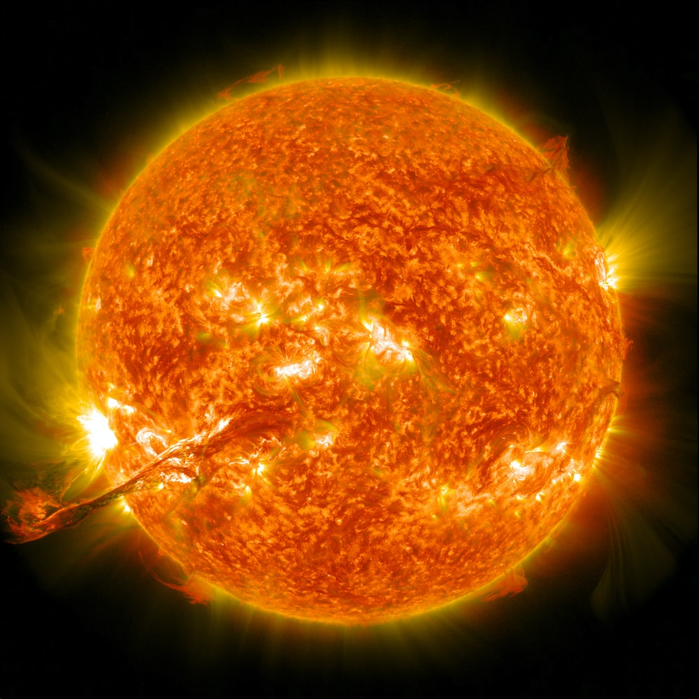

|  | Dati osservati | |
|---|---|---|
|
Distanza media dalla Terra |
150.000.000 km |
|
|
Luminosita' apparente |
-26.8 m | |
|
Magnitudine assoluta |
4,8 m | |
| Caratteristiche fisiche | ||
| Diametro | 1.392.00 km | |
|
(ripsetto alla Terra) |
109 volte | |
|
Area della superficie |
6,09 x 10 12 km 2 |
|
| Volume |
1,41 x 10 27 m 3 |
|
|
Temperatura superficiale |
5780 K | |